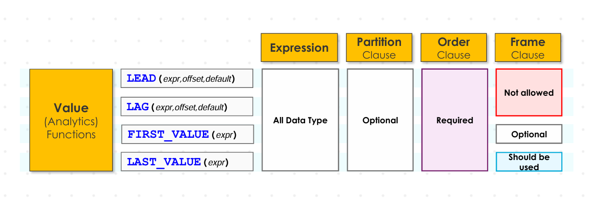
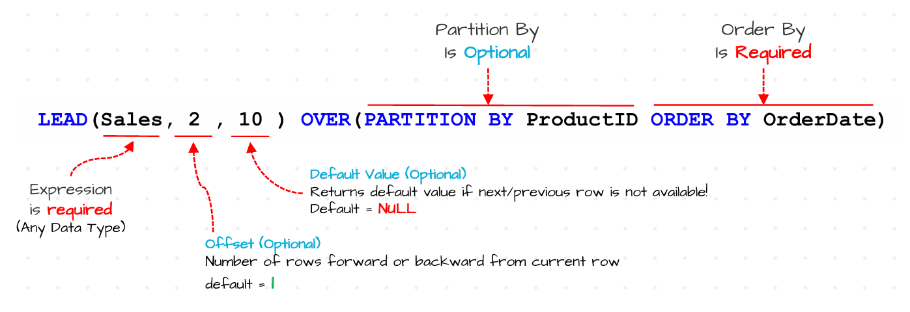

Window Value Functions#
Introduction#
Window Value functions in SQL are used to fetch the adjacent or specific rows within a window, enabling easy row wise comparision and analysis without altering the data structure. These functions are mainly used to comapre and analyze row to row data.
These functions are used to comapre current row with next/previous rows, can be used to track changes over time, identify trent patterns and access first or last values in the group/window.
Generally, we have 4 value functions in SQL. Those are LEAD(), LAG(), FIRST_VALUE(), LAST_VALUE(). The basic syntax of the value functions is shown in the following picture.

Window Value Functions Syntax
LEAD() and LAG() Functions#
LEAD() function is used to access the values from next rows within a window. Whereas LAG() function is used to access the the values from previous rows within a window. Generally the basic syntax of these two functions are
Function_name(Expression, Offset, Default) Over(Partition By <Field> Order BY <Field>). The general syntax of both functions is shown below.
Lead and Lag Functions SyntaxHere
Expressionis actually any column or field from you want to access the values. Offest is actually a number which indicates how many rows you want to move forward or backward from current row. Default value is value returned by LEAD() or LAG() function if they could able to find any values forward or backward of current row. If both functions couldn’t able to find any values form previous or next rows then by defualt they actually retun NULL or default value if you have specified. So both offeset and default values are optional. By default, offset = 1 and default value = NULL.Ex : Retrieve the sales of 2 before and after current month for each products.
SELECT ProductID, Month, Sales, LAG(Sales, 2, 0) OVER(PARTITION BY ProductID Order By Month ASC) as TwoMonthPreviousSales, LEAD(Sales, 2, 0) OVER(PARTITION BY ProductID Order BY Month ASC) as TwoMonthAferSales From Sales.Orders
UseCase 1 : Month to Month Analysis#
We can use these LAG() and LEAD() functions to do month to month analysis. This analysis is generally called as time series analysis which is actually process of analyzing the data to understand patterns, trends, and behaviours over time. We might have two analysis in Time series Analysis. Those are Year-over-Year Analysis (YOY), Month-over-Month Analysis (MoM)
Year-to-Year Analysis is used to Analyze the overall growth or decline of the business’s performance over time. Month-over-month analysis is used to analyze short-term trends and discover patterns in seasonality.
Now lets do month-over-month analysis by finding the percernt change in sales from previous month to current month.
Ex : Analyze the Month Over Month analysis by finding the percentage difference between the sales of current and previous months.
SELECT Month, TotalSales, PreviousMonthSales, ROUND((Cast ((TotalSales - PreviousMonthSales) as FLOAT)/ PreviousMonthSales)*100,1) as PercentChange From ( SELECT DATENAME(month, OrderDate) as Month, SUM(Sales) as TotalSales, LAG(SUM(Sales)) Over(Order BY Month(OrderDate)) as PreviousMonthSales, Month(OrderDate) as MonthNum FROM Sales.Orders Group By DATENAME(month,OrderDate), Month(Orderdate) ) as t
UseCase 2 : Customer Retention Analysis#
Window value functions can be used to find whether a particular customer is loyal or not. These functions can be used to measure customer’s behaviour and loyality to help businesses to build strong relationships with customers.
Here we are going to rank customer loyality based on the average no of days taken to place a new order.
Ex : In order analyze the customer loyalty, rank customers based on average days between their orders
SELECT CustomerID, AVG(DaysUntilNextOrder) AvgDays, Rank() Over(Order By COALESCE(AVG(DaysUntilNextOrder), 999999)) RankAvg FROM ( SELECT CustomerID, OrderDate, LEAD(OrderDate) Over(Partition By CustomerID Order BY OrderDate) as NextOrderDate, DATEDIFF(day, OrderDate, LEAD(OrderDate) Over(Partition By CustomerID Order BY OrderDate)) as DaysUntilNextOrder From Sales.Orders ) q Group BY CustomerID
FIRST_VALUE() and LAST_VALUE() Functions#
FIRST_VALUE() function returns the value from first row present in a window. Whereas LAST_VALUE() function returns the value from last row present in a window. As we know that the default frame in window functions is
RANGE BETWEEN UNPRECEDED BOUNDING AND CURRENT ROW. So if you run FIRST_VALUE() function then with this frame it always returns the first value in that window. so we get our desired result.But with LAST_VALUE() function, we doesn’t get our desired result. Suppose consider these values 10, 20, 30, 40. If we use LAST_VALUE() function with default frame then at intial frame it only contians first row as unbounded preceding and current row is same. So we get result as 10 itself. When current row is positioned at 2nd row, then LAST_ROW() function returns 20 as result. When currect row pointer is pointed to 3rd row, then LAST_ROW() function returns 30 as result. So when current row pointer is pointed to 4th row, then LAST_ROW() function returns 40 as result. So this means, we always getting same as row as result with default frame i.e 10,20,30,40. But it has to give the result 40 only. So we have to edit the default frame with this frame to get our desired result which is
ROW BETWEEN CURRENT ROW AND UNBOUNDED FOLLOWING.Ex : Find the lowest and highest sales for each product.
This task can be solved by 3 ways. First way is using MIN() and MAX() functions. Second way is using window value function i.e FIRST_VALUE() and LAST_VALUE() functions. Third way is using only FIRST_VALUE() function.
SELECT OrderID, ProductID, Sales, MIN(Sales) OVER(Partition By ProductID) as LowestSales, MAX(Sales) OVER(Partition By ProductID) as HighestSales FROM Sales.Orders
SELECT OrderID, ProductID, Sales, FIRST_VALUE(Sales) OVER(Partition By ProductID Order By Sales) as LowestSales, LAST_VALUE(Sales) OVER(Partition By ProductID Order By Sales ROW BETWEEN CURRENT ROW AND UNBOUNDED FOLLOWING) as HighestSales FROM Sales.Orders
SELECT OrderID, ProductID, Sales, FIRST_VALUE(Sales) OVER(Partition By ProductID Order By Sales ASC) as LowestSales, FIRST_VALUE(Sales) OVER(Partition By ProductID Order By Sales DESC) as HighestSales FROM Sales.Orders